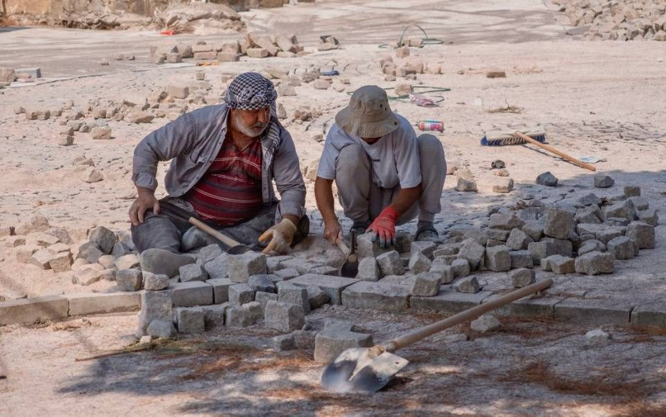
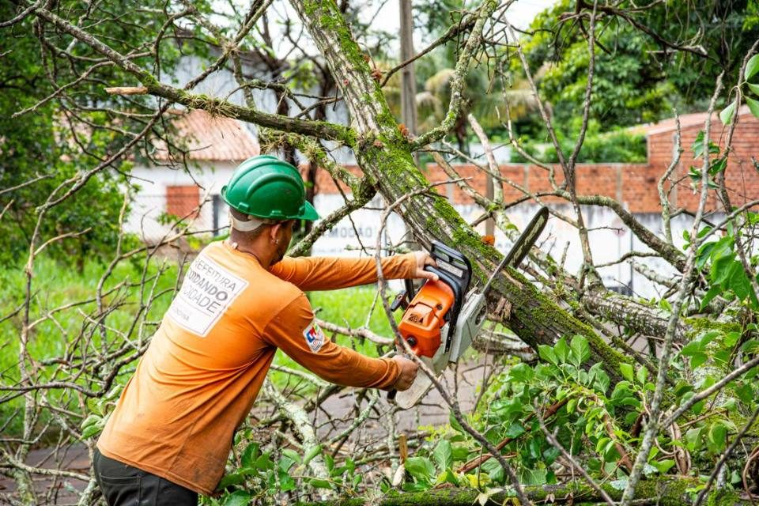

Kleinabriss
Bauten und Bauteile, die komplett weg sollen, vom Gartenhaus bis zur Garage.

Kreis Stormarn · Schleswig-Holstein
Von der Villa am Vorwerksbusch bis zur Mietwohnung in Neuschönningstedt: Wir bauen in Reinbek gezielt zurück und kommen dafür aus Hamburg-Altona.
Reinbek liegt am westlichen und nördlichen Ufer der Bille, die hier zum Mühlenteich aufgestaut ist. Im Osten prägen Ausläufer des Sachsenwalds die Landschaft. Am Mühlenteich steht das Schloss, erbaut von 1572 bis 1576 im Stil der niederländischen Renaissance. Mit der Bahnstrecke Hamburg–Berlin kam ab 1846 der Aufschwung. Entsprechend breit ist die Mischung: Bauernkaten, Villen der Kaiserzeit, Klinkerexpressionismus und Wohnbauten der 1970er Jahre.
Ende 2024 hatte Reinbek 28.616 Einwohner, gut die Hälfte davon in Alt-Reinbek und rund 8.100 in Neuschönningstedt. Neuschönningstedt wurde nach dem Zweiten Weltkrieg vor allem in den 1960er Jahren stark ausgebaut. Hinschendorf wird seit 1959 auf dem früheren Gutsgelände bebaut, dort liegt heute der Täbyplatz. Um diesen Platz und das Paul-Luckow-Stadion stehen mehrstöckige Mietshäuser im Stil der 1960er Jahre, das höchste ist das Sachsenwald-Hochhaus mit 20 Stockwerken. Krabbenkamp entstand ab 1971 nach einem eigenen Bebauungsplan.
In den Mietshäusern aus den 1960er und 1970er Jahren geht es häufig um Bäder und Küchen, die vor einer Neuvermietung ausgebaut werden sollen, oder um eine nichttragende Wand, die Küche und Wohnraum trennt. Beim Innenabbruch bleibt die Wohnung bewohnt. Gearbeitet wird staubarm, die Zimmer, die Sie weiter nutzen, bleiben geschützt. Eine tragende Wand kommt nur nach der Planung eines Statikers heraus.
In den Villen der Kaiserzeit steht vor einer Sanierung oft die Entkernung an: Dielen oder Beläge, Deckenverkleidungen, Küche und Bad kommen heraus, bis nur noch der Rohbau steht. Danach können wir mit Trockenbau direkt neue Trennwände, abgehängte Decken und Dämmung einbauen.
Gebäude aus der Zeit vor dem Asbestverbot vom 31. Oktober 1993 können asbesthaltige Fliesenkleber, Spachtelmassen, Putze oder Bodenbeläge enthalten. Vor dem ersten Schlag mit dem Hammer wird das geprüft. Muss Asbest raus, ist das Sache eines dafür berechtigten Fachbetriebs, wir machen erst danach weiter. Vorher müssen Strom- und Wasserleitungen von einem Elektro- bzw. Installationsbetrieb abgeklemmt werden.
Reinbek hat mehrere Erhaltungssatzungen nach § 172 BauGB, unter anderem für die Südliche Stadtmitte, den Ziegelkamp, das Dorf Schönningstedt, die Sophienstraße/Waldstraße, die Jahnstraße/Jahnckenweg und den Bereich Kückallee/Am Vorwerksbusch. Die Satzung für Kückallee/Am Vorwerksbusch wurde im Februar 2025 neu beschlossen. Sie erfasst auch Bismarckstraße, Lindenstraße, Fasanenstieg, Goetheallee, Schillerstraße und Kleistweg. Dort sind Errichtung, Rückbau, Änderung und Nutzungsänderung baulicher Anlagen genehmigungspflichtig. Innere Umbauten, die das äußere Erscheinungsbild nicht verändern, sind ausgenommen.
Für einen Innenabbruch, den man von außen nicht sieht, greift diese Satzung also nicht. Der Abriss eines Anbaus, einer Garage oder einer Mauer zur Straße kann dagegen genehmigungspflichtig sein. Die übrigen Satzungen sind älter und können anders formuliert sein. Ob Ihr Haus in einem der Gebiete liegt, zeigt eine Übersichtskarte der Stadt.
Reinbek gehört zu den Städten in Schleswig-Holstein, die selbst untere Bauaufsichtsbehörde sind. Zuständig ist der Bereich Planung und Bauordnung im Rathaus an der Hamburger Straße. Einen Abbruch, der nach der Landesbauordnung nicht verfahrensfrei ist, nimmt diese Stelle als Anzeige entgegen, und zwar mindestens einen Monat vor Beginn. Bei Kulturdenkmalen entscheidet die untere Denkmalschutzbehörde des Kreises Stormarn.
Seit dem 1. Oktober 2023 gilt eine neue Baumschutzsatzung. Sie schützt Bäume ab 100 cm Stammumfang, gemessen in 1 m Höhe. Im Traufbereich der Krone und 1,5 m darüber hinaus sind unter anderem Verdichten, Aufschütten, Abgraben und das regelmäßige Befahren unbefestigter Flächen verboten. Das kann auch den Weg betreffen, auf dem der Schutt zum Container gebracht wird. Für einen Container auf öffentlicher Straße braucht es eine Sondernutzungserlaubnis der Stadt, schriftlich und rechtzeitig vor Beginn beantragt.
Wir kommen aus Hamburg-Altona nach Reinbek, ohne Aufpreis für die Anfahrt. Besichtigungen bieten wir Mo–Fr ab 16:30 Uhr und Sa ab 9:00 Uhr an, danach erhalten Sie ein schriftliches Festpreis-Angebot.
Eigene Seiten gibt es für die Nachbarstadt Glinde und den Hamburger Bezirk Bergedorf. Ihr Vorhaben schildern Sie uns über das Anfrageformular.
Leistungen
Bauten und Bauteile, die komplett weg sollen, vom Gartenhaus bis zur Garage.

Räume bis auf den Rohbau zurück, z. B. vor einer Sanierung.
Gezielter Rückbau einzelner Bauteile in bewohnten Häusern.
Öffnung für eine neue Tür oder Durchreiche, tragend nur mit Statiker.

Nach dem Abriss direkt neu aufbauen, ohne zweite Firma.
Schutt von Ihrer Renovierung abholen lassen, auch ohne Abriss.

Wohnung, Keller, Dachboden oder Garage leer räumen, auch ganze Haushalte.

Garten oder Kleingarten komplett räumen: Laube, Platten, Grün, Gerümpel.

Pflaster, Gehweg- und Terrassenplatten aufnehmen und entsorgen.

Hecke schneiden, Sträucher entfernen, Grünschnitt abfahren.

Bäume fällen und abfahren, Genehmigung vorher geklärt.
Rasen mähen, Unkraut jäten, Beete pflegen, einmalig oder regelmäßig.
Laub entfernen und abfahren, den Garten winterfest machen.
Rasen säen oder Rollrasen verlegen, Beete vorbereiten, einfache Wege.
Scheunen, Ställe, Schuppen und andere Nebengebäude auf dem Hof abreißen.
Scheune, Lager und Stall räumen: Altgeräte, Holz, Metall, Reifen.
Zäune ab- und aufbauen, Feldränder und Knicks, Aufräumen nach Sturm.
Häufige Fragen
Die Erhaltungssatzung Kückallee/Am Vorwerksbusch nimmt innere Umbauten aus, die das äußere Erscheinungsbild nicht verändern. Eine nichttragende Wand können wir also im Innenabbruch entfernen. Ist die Wand tragend, braucht es vorher die Planung eines Statikers, und bauordnungsrechtliche Fragen klärt die Bauaufsicht der Stadt Reinbek.
Die Stadt. Reinbek ist selbst untere Bauaufsichtsbehörde, zuständig ist der Bereich Planung und Bauordnung. Ist ein Kulturdenkmal betroffen, kommt die untere Denkmalschutzbehörde des Kreises Stormarn hinzu.
Ja, darauf ist der Innenabbruch ausgelegt. Wir arbeiten staubarm, schützen die Räume, die weiter genutzt werden, und übergeben am Ende besenrein.
Kontakt
Kostenlos und unverbindlich, vor Ort oder per Video. Wir melden uns innerhalb eines Werktags.
Einsatzgebiet